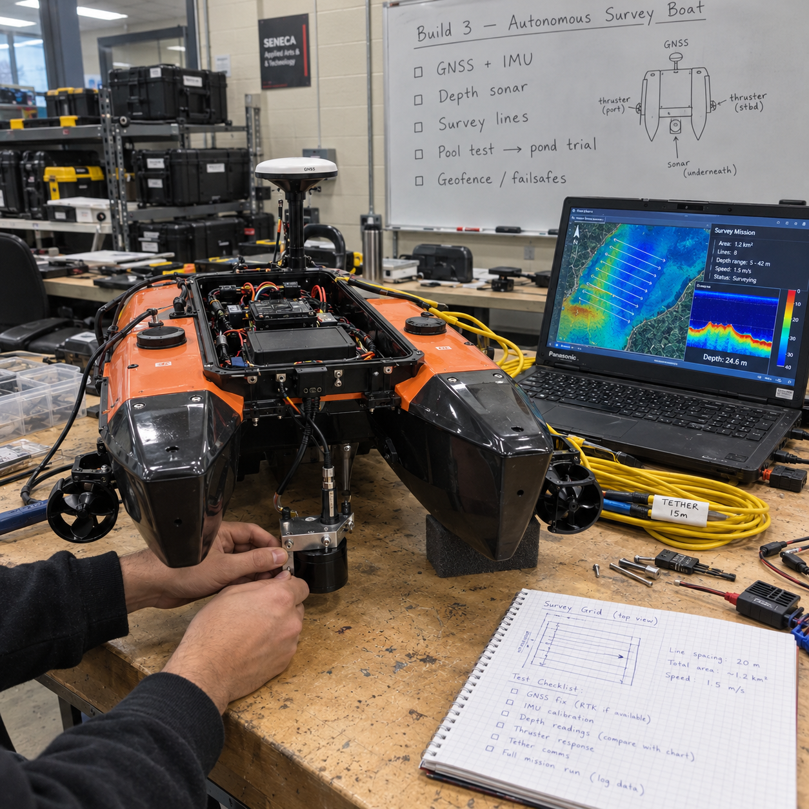
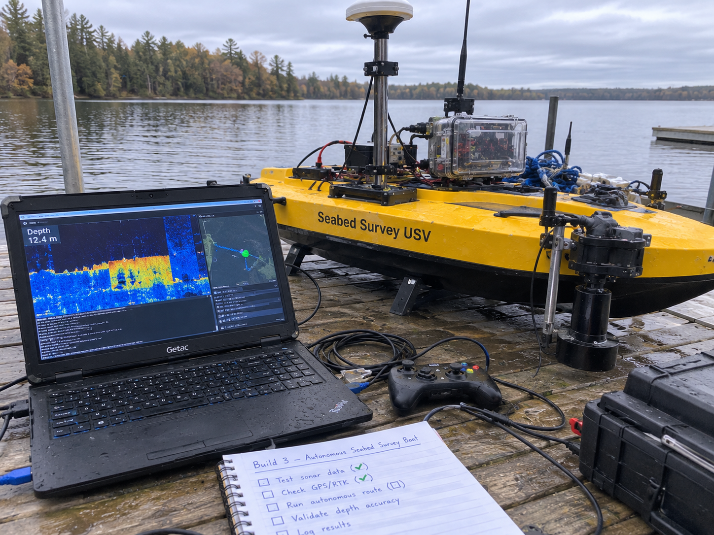

Autonomous Boat for Seabed Surveys and Anomaly Detection
A small catamaran USV running ArduPilot Rover lawnmower surveys with a Ping echosounder, producing georeferenced, gridded seabed models and an anomaly detector scored against planted targets, the survey-and-detect core of the mine-countermeasures USV solicitation at hobby scale.
Overview
This project is a planned build of a small autonomous catamaran boat that surveys a lakebed on its own: it runs pre-programmed lawnmower survey lines under ArduPilot Rover, logs depth with a Blue Robotics Ping echosounder at each GPS fix, grids the results into a seabed model, and flags anomalies, which are scored against planted targets at known positions.
The reason to build it is concrete. On September 10, 2026, the Department of National Defence opened a solicitation for a Canadian autonomous mine-countermeasures (MCM) USV: an uncrewed surface vessel that surveys the seabed to detect, locate, and identify mines. Offers were due October 1, and only current supply-arrangement holders could bid. The broader initiative lists route surveying and port protection among its maritime priorities (verify). A solo builder cannot bid on that solicitation and cannot buy the swath sonars a real MCM vessel carries. What a solo builder can do is reproduce the survey-and-detect core of the problem at hobby scale: repeatable autonomous survey lines, georeferenced depth data, a gridded seabed model, and an anomaly detector scored against planted targets.
Status: Planned. This page is a published build guide against a real Canadian government spec. Nothing on this page has been built, launched, or tested yet. Every performance number here is either quoted from the sensor datasheet, calculated and marked (est.), or marked (verify) where a primary source was not confirmed. When the boat exists, the results pages will report only what was actually measured, in water that was actually sailed.
The honest limit is worth stating up front: a single-beam echosounder only sees the bottom directly under the hull. Objects between survey lines are invisible unless the line spacing is tight relative to the sonar's beam footprint. Mine hunting normally uses swath sensors (side-scan or multibeam sonar) for exactly this reason. Rather than hide that limit, this build measures it: how detection rate against planted targets changes as line spacing widens is one of the headline results the project will publish.
Concept Illustrations
Both images below are AI-generated planning visuals created to communicate the design intent. They are not photographs of built hardware; the boat does not exist yet.


Target Spec
The target is the September 2026 DND solicitation for a Canadian autonomous mine-countermeasures USV, used here as a spec sheet the way the MINERVA challenge notices are used in the sibling builds. The solicitation is closed and was restricted to supply-arrangement holders, so nothing here is a bid; it is a self-assigned engineering target. The table pairs each requirement area with what the hobby-scale build can honestly attempt.
| Requirement area | What the solicitation / initiative asks | Hobby-scale approach |
|---|---|---|
| Core mission | Survey the seabed: detect, locate, identify mines autonomously | Detect and locate only: anomaly detection in gridded depth data, scored against planted targets; identification is out of scope |
| Survey coverage | Continuous seabed coverage, normally with swath sensors (side-scan / multibeam) | Single-beam Ping echosounder on lawnmower lines; line spacing held to the beam footprint; measure how spacing limits detection |
| Autonomy | Autonomous operation as an uncrewed surface vessel | ArduPilot Rover (boat frame) waypoint missions with geofence and failsafes for RC loss, low battery, GPS loss |
| Positioning | Locate contacts accurately enough to revisit and identify | GNSS position per depth reading, RTK optional; RTK vertical error about 50 mm in one DIY report; sensor offsets entered in ArduPilot |
| Maritime priorities | Route surveying and port protection listed among initiative priorities (verify) | Route surveying is exactly what a lawnmower-pattern depth survey reproduces at pond scale |
| Eligibility | Only current supply-arrangement holders could bid; offers due Oct 1, 2026 | Not a bid. This is a learning build against a published spec, with an honest gap table |
What the Hobby Version Proves
A catamaran the size of a carry-on suitcase cannot hunt mines. What it can do is prove, with numbers, that the builder understands the survey-and-detect problem well enough to reproduce its core loop end to end. Specifically, the finished build will demonstrate:
- Repeatable autonomous survey lines. The boat runs the same lawnmower pattern twice and the logged tracks line up, which is the difference between a survey instrument and a remote-controlled toy.
- Georeferenced depth data. Every Ping reading carries a position, a timestamp, and a corrected depth, exported from ArduPilot logs with pymavlink.
- A gridded seabed model. Scattered soundings become a continuous surface in QGIS using IDW or kriging, referenced to water level, not to an arbitrary zero.
- Anomaly detection scored against planted targets. Cinder blocks, 3D-printed shapes, and a sunken crate at surveyed positions in 1-3 m of water give a known ground truth, so detection rate and false alarms are measured, not asserted.
- A published minimum detectable target size. The single most honest output of the project: the smallest planted target the system reliably finds at each line spacing and depth, stated as a measured limit.
It will also prove its own limitation. Because the Ping is a single-beam sensor, the campaign deliberately surveys the same target field at 2-3 different line spacings and reports how detection degrades as spacing grows past the beam footprint. That measurement, not any claim of coverage, is the contribution.
Architecture
The vessel is a small catamaran driven by two thrusters, which gives differential steering without a rudder and a stable, wide stance for a straight-down sonar. ArduPilot Rover in its boat frame configuration runs on a Pixhawk or Cube flight controller and fuses GNSS (RTK optional) with the onboard IMU to hold lawnmower lines. The Ping echosounder reports depth under the hull, and ArduPilot logs each reading alongside position, so georeferencing is free as long as the sensor offsets are entered: ArduPilot measures depth from the sonar face and position at the centre of rotation, and the offsets between them matter once you care about decimetres [verify against the ArduPilot wiki].
The shore station is a laptop running Mission Planner or MAVProxy over a telemetry radio or LTE link, used for mission upload, monitoring, and abort. Nothing mission-critical depends on the link: geofence and failsafes for RC loss, low battery, and GPS loss are configured in Phase 0 so a dropped link turns into a return-to-launch, not a lost boat. Community builds of this class target roughly US$1,000-1,500 and survey at 2-5 knots (verify). After a survey, pymavlink exports the logs, draft and sound-velocity corrections are applied, and the gridding, anomaly detection, and mapping all happen ashore in QGIS.
How to Build It
Six phases, ordered so that everything that can fail on a laptop fails before anything gets wet. Weeks are planning estimates from the source document, not commitments.
Phase 0: Simulation (weeks 1-2)
- Run ArduPilot Rover SITL with the boat frame and confirm the simulated vehicle holds a heading and follows waypoints.
- Write the mission generator: a script that takes a survey polygon plus a line spacing and emits lawnmower waypoints. This script is where coverage discipline lives, so it gets written and tested before the hull exists.
- Configure the geofence and the three failsafes (RC loss, low battery, GPS loss) and prove each one in SITL by breaking the corresponding input and watching the vehicle return to launch.
Phase 1: Bench integration (weeks 2-5)
- Wire the flight controller, GNSS, Ping sonar, thrusters, and power system on the bench, first power-up through a current-limited supply.
- Enter the sensor offsets in ArduPilot: depth is measured from the sonar face, position at the centre of rotation, so the horizontal and vertical offsets of the sonar relative to that point must be measured on the physical hull and entered [verify against the ArduPilot wiki].
- Tub or pool test: confirm the sonar returns sane depths in known water, the thrusters steer differentially, and the logs record depth plus position together.
Phase 2: Spring field trials (April-May, after ice-out)
- Choose a calm pond or small lake with explicit permission, away from navigation channels.
- Plant the target field: cinder blocks, 3D-printed shapes, and a sunken crate at surveyed positions in 1-3 m of water. Surveyed positions are the ground truth the detector is scored against, so this step is done carefully, with GNSS fixes recorded for each target.
- Run the survey at 2-3 different line spacings over the same field. The spacings bracket the computed beam footprint so the coverage-versus-spacing relationship shows up in the data.
- Log water temperature on every outing; April water in southern Ontario is near the Ping's 0 C lower operating limit.
Phase 3: Processing
- Export logs with pymavlink into a table of timestamp, position, raw depth.
- Apply draft correction (sonar face below waterline) and sound-velocity correction, then reference depths to water level. RTK vertical error of about 50 mm in one DIY report sets the floor on how good the vertical reference can be.
- Grid the corrected soundings with IDW or kriging in QGIS to produce a continuous seabed surface.
- Extract anomalies as residuals after smoothing (a difference-of-Gaussians approach): the smooth surface is the expected bottom, and what sticks up from it is a candidate target.
- Repeat the survey on another day for change detection: the same bottom surveyed twice shows which anomalies persist and which were noise.
Phase 4: Report
- Publish detection rate versus target size, depth, and line spacing, plus false alarms per survey.
- Publish position error against the surveyed target positions, survey time per hectare, and battery use per hectare.
- Publish the spec-gap table (below) with swath sensing, mine identification, and range listed as not tested, because they are not.
- Stretch goals, only after the core loop is proven: a scanning sonar, and tying in a hydrophone and AIS node by timestamp so the survey carries an acoustic and traffic picture of the water it sailed.
Working numbers: beam footprint and line spacing
The Ping's beam footprint on the bottom is approximately 2 x depth x tan(half beamwidth) (est.). With the current revision's 25 degree beam that works out to roughly 0.9 m at 2 m depth, 1.3 m at 3 m, and 2.2 m at 5 m. Continuous coverage requires line spacing no wider than the footprint at the shallowest depth in the survey area, so the spacing choice is an arithmetic decision, not a guess. The current Ping revision (May 2023) has 0.3 m typical minimum range, 100 m typical usable range, 25 degree beamwidth, range resolution of 0.5% of range, and a 0-30 C operating range. The original model differs (0.5 m minimum, 50 m typical, 70 m firmware limit, 30 degree beam), so confirm which unit you are buying before trusting these numbers.
Spec-Gap Table
The honest accounting of where a hobby build stands against the MCM USV solicitation. Nothing here is overstated; statuses will only move from Planned to a measured result when the corresponding test has actually run.
| Requirement | Status | Notes |
|---|---|---|
| Autonomous survey lines | Planned | ArduPilot Rover lawnmower missions; repeatability to be measured over repeat runs |
| Detect objects on the seabed | Planned | Anomaly residuals in gridded Ping data, scored against planted targets; minimum detectable size to be published |
| Locate objects accurately | Planned | Position error measured against surveyed target positions; RTK optional, vertical error about 50 mm in one DIY report |
| Identify objects (mine vs rock) | Not tested | A single-beam echosounder returns depth, not imagery; identification needs swath sensors and is out of scope |
| Continuous seabed coverage | Partial, by construction | Only achievable when line spacing stays under the beam footprint; the spacing-versus-detection limit is a measured output, not a solved problem |
| Swath sensing (side-scan / multibeam) | Not tested | The real MCM sensor class; stretch goal is a scanning sonar, still far short of side-scan |
| Operational range and endurance | Not tested | Pond-scale surveys within sight; no open-water or long-endurance claim |
| Bid eligibility | Not applicable | Solicitation was restricted to current supply-arrangement holders; this page is a learning build, not a proposal |
Metrics to Publish
- Detection rate versus target size, depth, and line spacing, scored against the planted target field.
- False alarms per survey, with the repeat-survey change detection used to separate persistent anomalies from noise.
- Position error of reported anomalies against the surveyed ground-truth target positions.
- Minimum detectable target size at each surveyed line spacing and depth, stated as a measured limit.
- Survey time per hectare at the chosen spacings, so coverage cost is explicit.
- Battery use per hectare and per survey hour.
- Water temperature per outing, because April water sits near the sonar's lower operating limit.
Hardware to Buy First
- Small catamaran hull with two thrusters (differential steering, stable sonar platform).
- Pixhawk or Cube flight controller running ArduPilot Rover (boat frame).
- GNSS receiver; RTK as an optional later upgrade for the vertical reference.
- Blue Robotics Ping echosounder, confirming which revision (current May 2023 revision vs original model) before ordering.
- Telemetry radio or LTE link for the shore station.
- Shore-station laptop with Mission Planner or MAVProxy.
- Power system sized from measured consumption, plus a way to log water temperature on every outing.
Community builds of this class target roughly US$1,000-1,500 and survey at 2-5 knots (verify); the real bill of materials will be published as purchases happen, with prices paid, not prices guessed.
Safety and Legal Notes
- Stay within sight of the boat at all times and stay off navigation channels.
- Get explicit permission for the water body before launching anything.
- Never launch alone from a slippery shore in cold water; spring water in southern Ontario is cold enough that a fall in is an emergency, not an inconvenience.
- No hobby-USV-specific rule was found in research, but the Vessel Operation Restriction Regulations limit power-driven vessels on some waters. Confirm the situation for the intended lake with Transport Canada boating safety (verify) before the first field day.
- Ice season ends the work: field trials are an April-May-after-ice-out activity, and the build calendar respects that.
Frequently Asked Questions
Can a hobby USV do real seabed survey work?
Yes, at small scale. An ArduPilot Rover catamaran with a Ping echosounder can run repeatable lawnmower survey lines, log georeferenced depths, and build a gridded seabed model in QGIS. The honest limit is that a single-beam sonar only sees directly under the hull, so detection depends on line spacing.
How far apart should survey lines be for full bottom coverage?
Line spacing must not exceed the sonar beam footprint on the bottom. For the Ping with a 25 degree beam, the footprint is roughly 2 times depth times tan of the half beamwidth: about 0.9 m at 2 m depth, 1.3 m at 3 m, and 2.2 m at 5 m (est.).
What does the Blue Robotics Ping sonar measure?
The Ping is a single-beam echosounder. The current revision (May 2023) has 0.3 m typical minimum range, 100 m typical usable range, a 25 degree beamwidth, and 0.5 percent of range resolution, operating from 0 to 30 C. Confirm which revision you buy, since the original model differs.
How much does a DIY autonomous survey boat cost?
Community builds of small catamaran USVs with ArduPilot Rover, a Pixhawk or Cube flight controller, GNSS, and a Ping echosounder target roughly US$1,000 to 1,500 (verify) and typically survey at 2 to 5 knots. This build guide keeps its own bill of materials honest as purchases happen.
Is this build legal on Canadian lakes?
No hobby-USV-specific rule was found in research, but the Vessel Operation Restriction Regulations limit power-driven vessels on some waters, so confirm with Transport Canada boating safety (verify) and get permission for the water body. Stay within sight, off navigation channels, and never launch alone in cold water.
Does this project meet the DND mine-countermeasures USV requirement?
No, and the page says so plainly. The DND solicitation required swath sensors that detect, locate, and identify mines, and was only open to current supply-arrangement holders. This hobby build proves only the survey-and-detect core: repeatable lines, gridded depth models, and anomaly detection against planted targets.
Roadmap
The southern Ontario calendar drives everything. Through the winter this build is a software-and-bench project: Phase 0 simulation, the lawnmower mission generator, and Phase 1 bench integration can all happen indoors, and the overall build order puts the pure-software builds first anyway. Field trials wait for April-May after ice-out, when a calm pond is sailable and the water, while cold, is inside the sonar's 0-30 C operating range. Ice season ends the work each fall, so every field result needs to land in the open-water window.
On the program side, the builds in this series track the MINERVA challenges run through Innovative Solutions Canada and the IDEaS program streams. The MCM USV solicitation itself was restricted to supply-arrangement holders and is closed, so the realistic path is not bidding; it is publishing measured results that demonstrate the survey-and-detect core, then watching for future MINERVA maritime challenges and the next IDEaS sandbox where a proven, documented hobby-scale capability could matter.
Next concrete steps, in order: run ArduPilot Rover SITL with the boat frame, finish the polygon-plus-spacing mission generator, and publish the first simulated lawnmower tracks. After that, buy the hull, thrusters, flight controller, and Ping sonar, and start the bench log that this page's spec-gap table will eventually be filled in from.
Cite This Page
Citation formats
Plain text
Taki Sadik, "Autonomous Seabed-Survey Boat Build Guide", TYFSADIK, https://tyfsadik.org/work/defence/seabed-survey-boat.html (accessed 2026-10-24).BibTeX
@misc{sadik-seabed-survey-boat,
author = {Sadik, MD. Taki Yasir Faraji},
title = {Autonomous Seabed-Survey Boat Build Guide},
year = {2026},
url = {https://tyfsadik.org/work/defence/seabed-survey-boat.html},
urldate = {2026-10-24}
}APA
Sadik, M. T. Y. F. (2026). Autonomous Seabed-Survey Boat Build Guide. TYFSADIK. https://tyfsadik.org/work/defence/seabed-survey-boat.html